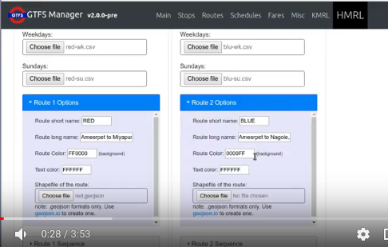

Click here to see a demo video.
This page handles the specific CSV format↗ of HMRL, Hyderabad, India. There are some files to upload and some settings to set before converting to GTFS. Please make your way through each of the tabs.
- Do remember to enter the password on top right for the final GTFS conversion.Choose number of Routes: warning: clicking this again will reset everything below.
Click here↗ to see a sample structure of the HMRL CSV format.
Add a new station:
Note: This is a simplified representation of the metro stations.
In the system-generated data files that you will upload in 3rd tab,
each platform has its id like "MYP1", "MYP2" etc.
In the final GTFS, "MYP" will be automatically set as parent to "MYP1", "MYP2".
This table is for setting the correct stop_id's for platforms. Example: At Ameerpet, Blue Line uses platform 4 and Red Line uses platform 2.
Upload Fares Chart CSV : (get template)
Note: This is optional. If no file is chosen, fare_rules file won't be created.
Assign Fare ID's:
Add a fare
Please ensure that all the fare prices mentioned in the fares chart csv above have been assigned a fare_id here.
This table will be converted to the translations.txt spec in GTFS extensions, that can be used in regions having multiple official languages.
Note: names must exactly match those given in other places.
This table will tell the program what timing calculations to apply in case a stop is missing from the uploaded csv datafile.
There are some default configurations already loaded. Skip this if there's been no major changes since last run.